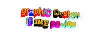

"In an age where we interact primarily with branded and marketed web content, Cameron’s World is a tribute to the lost days of unrefined self-expression on the Internet. This project recalls the visual aesthetics from an era when it was expected that personal spaces would always be under construction." Adding on to those ideas, when building my personal website, it seemed fair to include the song that evoked the memory of a lost time. Performed by The Strokes, Someday is a song that speaks of nostalgia for a time. Even the video itself is a group of friends sitting together and enjoying. So as you explore the website, allow yourself to be seranaded by the song that inspired it all.
This website is an amalgamation of graphics and styles from classic websites. The Space Jam website is a piece of digital history and served as the primary inspiration. Another inspiration was the Yesterweb, for it's nice and clean delivery of information. I also got many cool stamps, backgrounds, and design inspiration from Lulu's website. Such a cool and creative place. Finally, this would not have been possible without the help of GifCities a search engine for GeoCities animated GIFs.